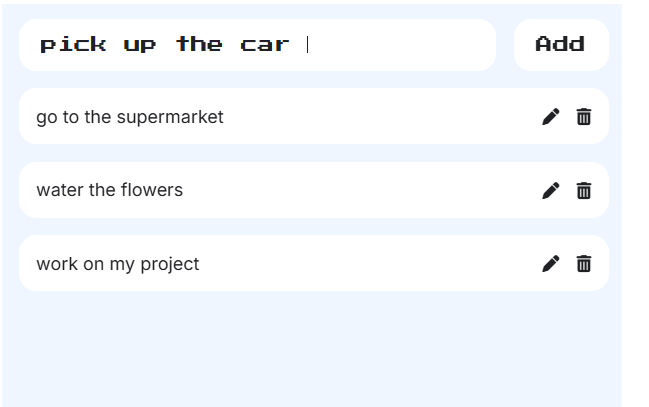

HTML, CSS & JavaScript
This is a task management application built with React.js. It allows users to add new tasks to the list, edit existing tasks, delete completed or unwanted tasks and persist tasks in local storage, ensuring data is saved even after refreshing the page. This App showcases React hooks (useState, useEffect), local state management, and component-based architecture.